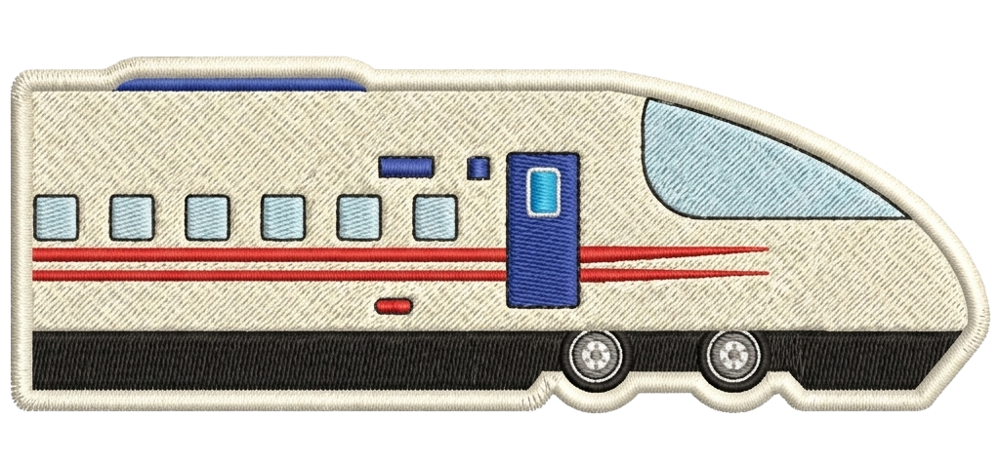
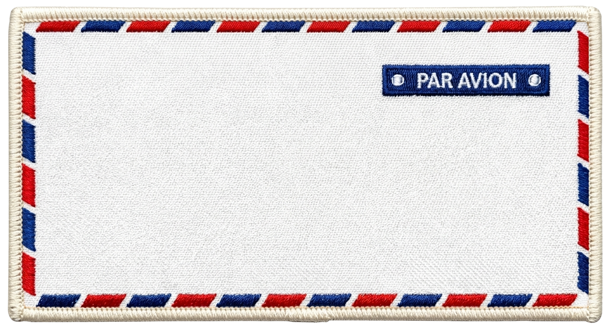
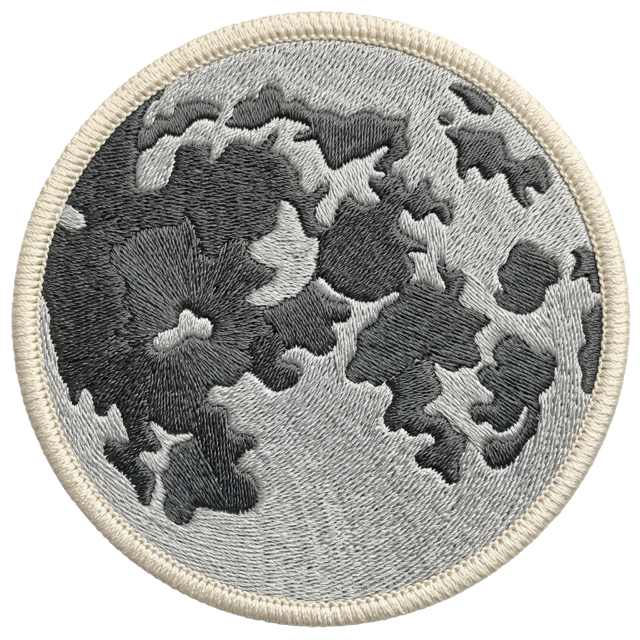
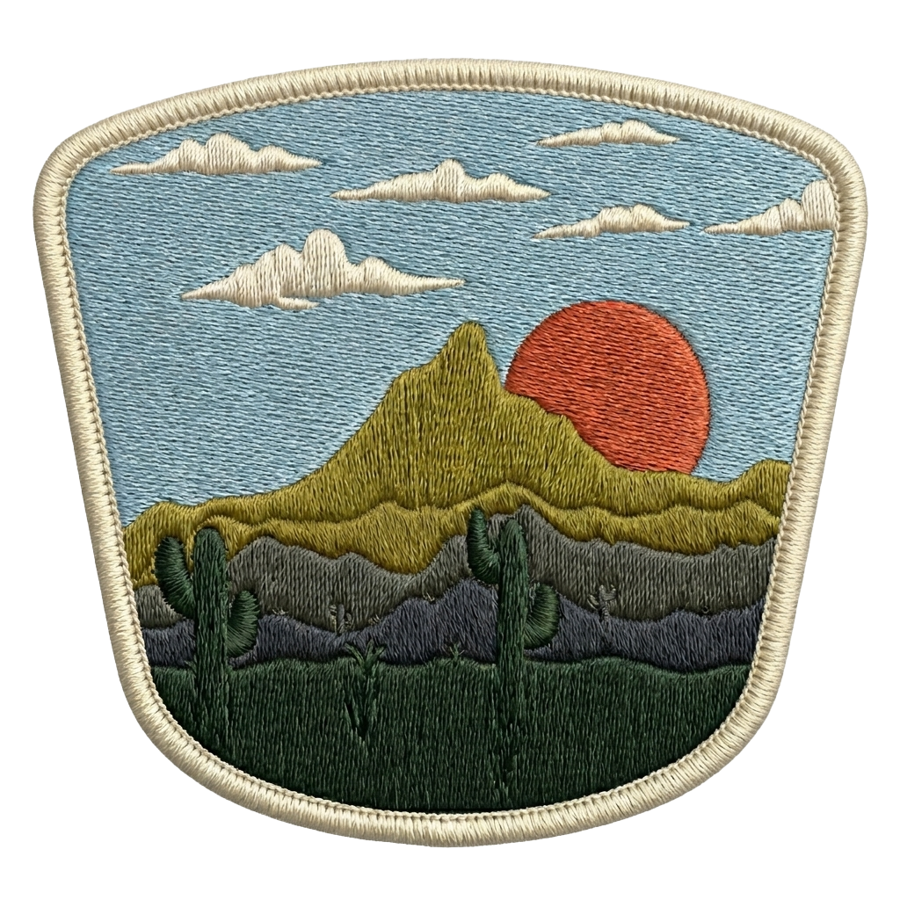
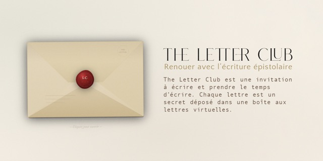
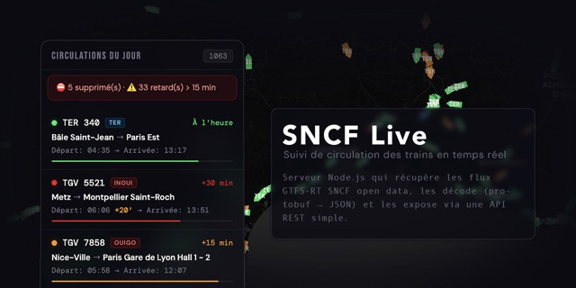
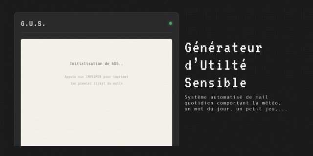
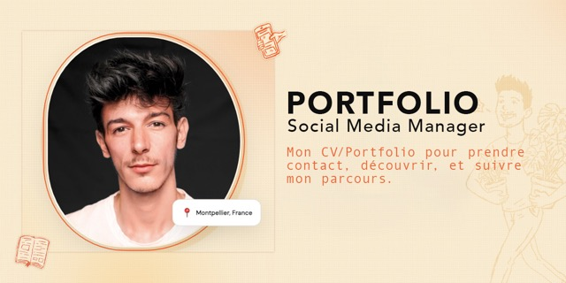
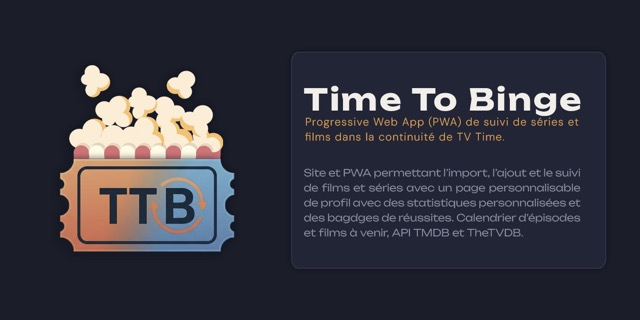

À la création de mon tout premier blog en 2012, j'ai découvert ce qu'internet m'offrait : un terrain de jeu quasi-infini pour créer et partager. Je passais nuit et jour à écrire, penser, mais aussi à apprivoiser Photoshop et le langage de développement.
J'étais passionné et émerveillé.
Tout seul, je passais mon temps à bricoler en fouillant dans la console de développement et à essayer de comprendre comment ça fonctionnait et ce que je pouvais modifier (tout ça juste pour arrondir le bord des menus).
Avec le temps, ce jeu de création devenait encore plus intense alors j'ai tout diversifié. Après le web, j'ai commencé la photo, la vidéo, les réseaux sociaux... pour finalement tout combiner du mieux que je le pouvais.
Mais il me manquait quelque chose. Les sites internet de SaaS et les entreprises ont commencé à pulluler et m'ont fait réaliser une chose : le web était devenu trop sérieux. Pas partout, certes, mais pour l'utilisateur lambda, si.
Alors j'ai commencé à imaginer des expériences, à ramener de l'organique. D'un tracker SNCF en temps réel pour les ferrovipathes comme moi, à une boîte aux lettres virtuelle en passant par un recueil de souvenirs. Je pouvais à présent allier mon hobby de coder, mon envie de partager grâce aux projets communautaires et mon besoin de créativité.
J'ai 27 ans (bientôt 28) au moment où j'écris ces lignes dans VS Code, et j'apprends encore chaque jour, maintenant aidé de Claude AI pour les idées les plus complexes.




